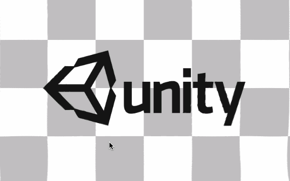

前段时间看到了一些很不错的屏幕特效，然后手抖删掉了，幸存几个整理记录一下
这个是屏幕水波纹的效果，可以通过Curve自定义波纹的形状，很是方便
原作者的是随机位置，我加了鼠标点击模式
效果

Shader
1 | Shader "Hidden/Ripple Effect" |
代码
1 | public enum RippleType |
前段时间看到了一些很不错的屏幕特效，然后手抖删掉了，幸存几个整理记录一下
这个是屏幕水波纹的效果，可以通过Curve自定义波纹的形状，很是方便
原作者的是随机位置，我加了鼠标点击模式

1 | Shader "Hidden/Ripple Effect" |
1 | public enum RippleType |